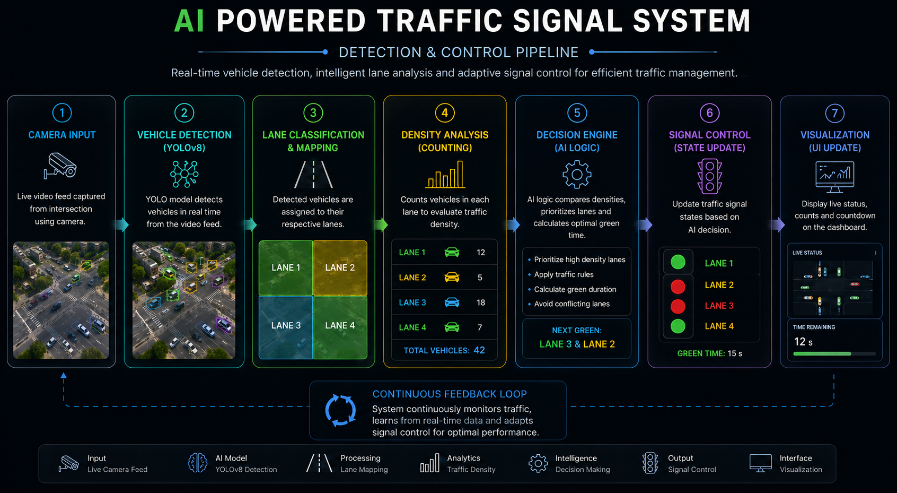
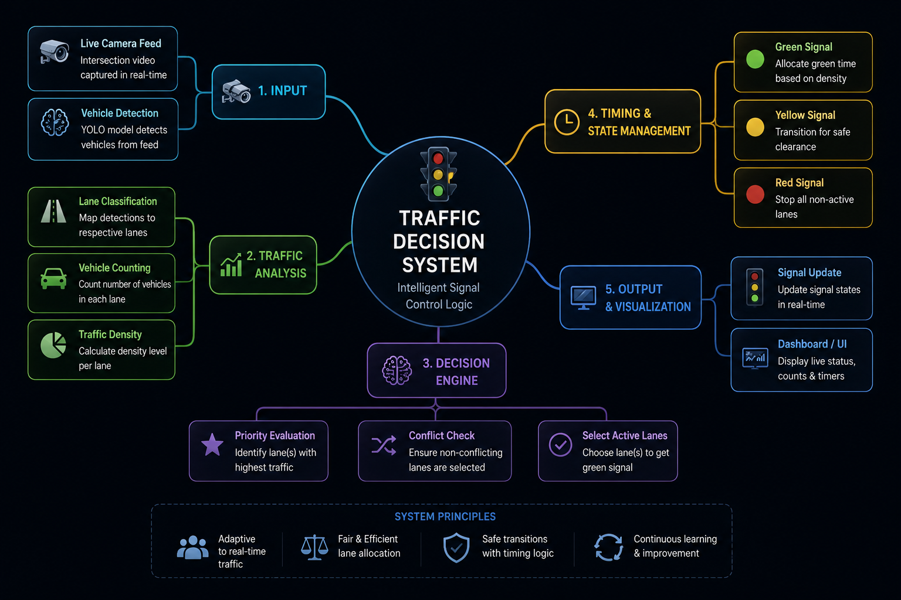

ARTIFICIAL INTELLIGENCE
A computer vision based intelligent traffic management system that dynamically controls traffic signals using real-time vehicle detection, lane analysis, and adaptive signal timing algorithms.
OVERVIEW
The AI Powered Traffic Signal System is an The AI Powered Traffic Signal System is an intelligent traffic management solution that uses computer vision, YOLO-based vehicle detection, and adaptive signal logic to optimize traffic flow in real time. By analyzing lane-wise traffic density and dynamically controlling signal timing, the system reduces congestion and improves intersection efficiency.
PROBLEM
Conventional traffic signal systems often operate using fixed timing mechanisms that fail to adapt to real-time traffic density variations. This can lead to inefficient signal allocation, increased vehicle congestion, unnecessary waiting periods, and poor traffic distribution during varying road conditions. This project explores an AI-driven approach capable of analyzing live traffic conditions, identifying active lanes, and dynamically controlling traffic signals using intelligent decision-making algorithms.
AI PIPELINE
The system processes live camera feeds, performs AI-based vehicle detection, classifies traffic lanes, evaluates vehicle density, and dynamically updates traffic signal states through an adaptive decision engine.

SIGNAL LOGIC
The traffic control engine continuously evaluates detected lane activity, prioritizes traffic flow based on vehicle presence, dynamically adjusts green signal durations, and manages signal state transitions using intelligent timing logic.

CHALLENGES
Developing reliable lane-based vehicle detection required careful optimization of detection thresholds, lane region mapping, and traffic state management. Additional challenges included maintaining real-time processing performance, reducing false detections, synchronizing signal timing transitions, and dynamically adapting signal allocation based on changing traffic density.
FEATURES
FUTURE
Future enhancements include cloud-connected traffic analytics, emergency vehicle prioritization, multi-intersection coordination, predictive traffic optimization, and integration with smart city infrastructure systems.